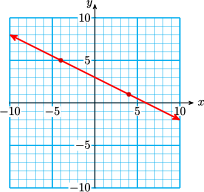
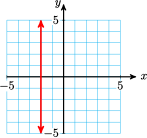

A rate of change is a type of ratio that measures how one variable changes with respect to another.
Section 3.3 Slope
¶Subsection Rate of Change
Example 3.13.
In order to fire a particular kind of pottery, the pieces must first be cured by raising the temperature slowly and evenly. Sonia checks the temperature in the drying oven at ten-minute intervals, and records the following data.
| Time, \(x\) | 0 | 10 | 20 | 30 | 40 | 50 | 60 |
| Temperature, \(y\) | 70 | 74 | 78 | 82 | 86 | 90 | 94 |
Solution

A graph of the data is shown at right.
Sonia calculates the rate at which the temperature is rising by finding the following ratio:
\begin{equation*}
\dfrac{\text{change in temperature}}{\text{change in time}}
\end{equation*}
For example, over the first 10 minutes, the temperature rises from 70 degrees to 74 degrees, so
\begin{equation*}
\dfrac{\text{change in temperature}}{\text{change in time}} = \dfrac{\text{4 degrees}}{\text{10 minutes}}
\end{equation*}
or 0.4 degree per minute. This is less than the maximum rate recommended for curing the pottery.
You can check that over each ten-minute interval the temperature again rises by four degrees, so it appears that the oven is heating up at an acceptable rate.
Subsubsection Reading Questions
1.
What is a rate of change?
Answer
A type of ratio that measures how one variable changes with respect to another
2.
What are the units of the rate of change in Example 1?
Answer
degrees per minute
Subsection Slope
We introduce some new notation to use when calculating a rate of change.
The Greek letter \(\blert{\Delta}\) ("delta") is used in mathematics to indicate change.
In Example 1, we used the variable \(x\) to represent time and \(y\) to represent the temperature, so we denote the ratio \(\dfrac{\text{change in temperature}}{\text{change in time}}\) by \(\dfrac{\Delta y}{\Delta x}\text{.}\) With this notation, we calculate the rate of change of temperature between the data points \((20, 78)\) and \((50, 90)\) as follows:
\begin{equation*}
\dfrac{\Delta y}{\Delta x}=\dfrac{\text{12 degrees}}{\text{30 minutes}} = 0.4 \text{degree per minute}
\end{equation*}
We can illustrate the rate of change on a graph of the data, as shown below. We move from the point \((20, 78)\) to the point \((50, 90)\) by moving horizontally a distance of \(\Delta x = 30\) and then vertically a distance of \(\Delta y = 12\text{.}\)
The rate of change of one variable with respect to another is so important in applications that the ratio \(\dfrac{\Delta y}{\Delta x}\) is given a name; it is called slope, and is usually denoted by the letter \(m\text{.}\)
Slope.
The slope of a line is defined by the ratio
\begin{equation*}
\blert{\dfrac{\text{change in } y\text{-coordinate}}{\text{change in } x\text{-coordinate}}}
\end{equation*}
as we move from one point to another on the line. In symbols,
\begin{equation*}
\blert{m=\dfrac{\Delta y}{\Delta x}}
\end{equation*}
Look Closer.
The slope of a line measures how fast the \(y\)-coordinate changes as we increase the \(x\)-coordinate of points on the line. More specifically, when we move one unit in the \(x\)-direction, how many units should we move in the \(y\)-direction to get back to the line?
Example 3.14.
Use the points \(A\) and \(B\) to compute the slope of the line shown.

Solution
The point \(A\) has coordinates \((1,3)\text{,}\) and \(B\) has coordinates \((5,6)\text{.}\) As we move along the line from \(A(1,3)\) to \(B(5,6)\text{,}\) the \(x\)-coordinate changes by 3 units, and the \(y\)-coordinate changes by 4 units. The slope of the line is thus
\begin{equation*}
\dfrac{\Delta y}{\Delta x}=\dfrac{3}{4}
\end{equation*}
The slope tells us that if we start at any point on the line and move 1 unit in the \(x\)-direction, we must move \(\dfrac{3}{4}\) unit in the \(y\)-direction to return to the line.
Caution 3.15.
Note the difference between the statements \(y=3\) and \(\Delta y = 3\text{;}\) they are not the same. When we discuss a graph,
- \(y=3~~\) means that the \(y\)-coordinate of a particular point is 3, but
- \(\Delta y = 3~~\) means that the \(y\)-coordinate changes by 3 units when we move from one point to another.
Subsubsection Reading Questions
3.
What does \(\Delta\) mean in mathematics?
Answer
Change in \(x\text{.}\)
4.
How do we indicate \(\Delta x\) on a graph?
Answer
By a horizontal arrow
5.
What is the name of the ratio \(\dfrac{\Delta y}{\Delta x}\text{,}\) and what letter is used to represent it?
Answer
slope, \(m\)
Subsection Meaning of Slope
In Example 1, we graphed the temperature of a pottery oven over time. We calculated the slope of the graph as
\begin{equation*}
\dfrac{\Delta y}{\Delta x} = 0.4~~ \text{degrees per minute}
\end{equation*}
The slope gives us the rate of change of the temperature with respect to time: the temperature is increasing at a rate of 0.4 degrees per minute.
The slope of a line measures the rate of change of \(y\) with respect to \(x\text{.}\)
In different situations, this rate might be interpreted as a rate of growth or a speed. The slope of a graph can give us valuable information about the variables involved.
Example 3.16.
The graph shows the distance traveled by a driver for a cross-country trucking firm in terms of the number of hours she has been on the road.

- Compute the slope of the graph.
- What is the meaning of the slope for this problem?
Solution
-
Choose any two points on the line, say \(G(2,100)\) and \(H(4,200)\) shown in the figure. As we move from \(G\) to \(H\) we find
\begin{equation*} m = \dfrac{\Delta D}{\Delta t} = \dfrac{100}{2} = 50 \end{equation*}The slope of the line is 50.
-
The best way to understand the slope is to include units in the calculation.
\begin{equation*} \dfrac{\Delta D}{\Delta t}~~ \text{means}~~\dfrac{\text{change in distance}}{\text{change in time}} \end{equation*}or
\begin{equation*} \dfrac{\Delta D}{\Delta t} = \dfrac{100 \text{ miles}}{2~ \text{hours}} =50~ \text{miles per hour} \end{equation*}The slope represents the trucker's average speed or velocity.
Caution 3.17.
In Example 3, we refer to a point by a capital letter and the coordinates of the point, like this: \(H(4,200)\text{.}\) This means that \(t=4\) and \(D=200\) at the point \(H\text{.}\) Do not confuse the coordinates of a particular point with the values of \(\Delta t\) and \(\Delta D\) obtained by moving from one point to a second point.
Subsubsection Reading Questions
6.
What does the slope of a line measure?
Answer
the rate of change of \(y\) with respect to \(x\)
7.
What does the slope of the line measure in Example 3?
Answer
the trucker's average speed or velocity
Subsection Geometrical Meaning of Slope
Suppose we graph two lines with positive slope on the same coordinate system. If we move along the lines from left to right, then the line with the larger slope will be steeper. This makes sense if we think of the slope as a rate of change: The line whose \(y\)-coordinate is increasing faster with respect to \(x\) is the steeper line.
Look Closer.
You can verify the slope given for each line in figure (a) by computing \(\dfrac{\Delta y}{\Delta x}\text{.}\) For each unit you increase in the \(x\)-direction, the steepest line increases 2 units in the \(y\)-direction, the middle line increases 1 unit in the \(x\)-direction, and the flattest line increases only \(\dfrac{1}{3}\) unit.


Figure (b) shows several lines with negative slopes. These lines slant downwards or decrease as we move from left to right. The more negative the slope, the more sharply the line decreases. For both increasing and decreasing graphs, the larger the absolute value of the slope, the steeper the graph.
Caution 3.18.
Slopes measure the relative steepness of two lines only if they are graphed on axes with the same scales. Changing the scale on either the \(x\)-axis or the \(y\)-axis can greatly alter the appearance of a graph.
Subsubsection Reading Questions
8.
What sort of lines have negative slopes?
Answer
Lines that slant downwards or decrease as we move from left to right
Subsection Skills Warm-Up
Subsubsection Exercises
Write a rate for each of the following situations, including units.
1.
Zack's average speed, if he drove 426 miles in 9 hours.
2.
Zelda's average speed, if she ran 6.6 miles in 55 minutes.
3.
The rate at which water flows through a pipe, if a 400-gallon storage tank fills in 20 minutes.
4.
A baby whale's rate of growth, if it gains 3000 pounds in its first 40 days of life.
5.
Earnest's rate of pay, if he earns $344 for a 40-hour week.
6.
Meg's rate of pay, if she charges $90 to type a 40-page paper.
Subsection Homework 3.3
For Problems 1–2, find the slope of each line segment.
1.

2.
3.
Choose two points from the table and compute the slope of the line.
| \(x\) | \(0\) | \(2\) | \(6\) | \(8\) |
| \(y\) | \(-30\) | \(0\) | \(60\) | \(90\) |

4.
Graph the line and compute its slope.
\begin{equation*}
y=-12x+32
\end{equation*}
| \(x\) | \(-2\) | \(0\) | \(3\) | \(4\) |
| \(y\) | \(\hphantom{0000}\) | \(\hphantom{0000}\) | \(\hphantom{0000}\) | \(\hphantom{0000}\) |
For Problems 5–6, find the slope of the line. Illustrate \(\Delta x\) and \(\Delta y\) on the graph.
5.
\(x+2y=6\)

6.
\(3x-2y=0\)

For Problems 7–10,
- Find the intercepts of each line.
- Graph the line on the grid provided. Use the intercept method.
- Use the intercepts to calculate the slope of the line.
- Calculate the slope again using the suggested points on the line.
7.
\(2x+3y=12\)
\begin{equation*}
(-3,6)~~\text{and}~~(3,2)
\end{equation*}

8.
\(5x-2y=10\)
\begin{equation*}
(-2,-10)~~\text{and}~~(4,5)
\end{equation*}
9.
\(x+y=5\)
\begin{equation*}
(-3,8)~~\text{and}~~(8,-3)
\end{equation*}
10.
\(x-2y=4\)
\begin{equation*}
(6,1)~~\text{and}~~(-4,-4)
\end{equation*}
11.
A line contains the points \((0,0)\) and \((3,2)\text{.}\) What is its slope?
12.
A line contains the points \((0,0)\) and \((-30,50)\text{.}\) What is its slope?
13.
Which line is steeper: one with slope \(\dfrac{3}{5}\) or one with slope \(\dfrac{5}{3}\text{?}\)
14.
Which line is decreasing: one with slope \(\dfrac{1}{4}\) or one with slope \(-2\text{?}\)
15.
The line shown below has slope \(\dfrac{5}{2}\text{.}\) If \(\Delta x = 7\text{,}\) find \(\Delta y\text{.}\)

16.
The line shown below has slope \(-4\text{.}\) If \(\Delta y=-6\text{,}\) find \(\Delta x\text{.}\)

For Problems 17–18,
- Compute the slope of the graph, including units.
- Interpret the slope as a rate; what does it tell you about the problem?
17.
Audrey can drive 150 miles on 6 gallons of gas, and 225 miles on 9 gallons of gas. Write an equation for the distance, \(d\text{,}\) that Audrey can drive on \(g\) gallons of gas.

18.
The sales tax on a $15 purchase is 60 cents, and 80 cents on a $20 purchase. Write an equation for the tax \(T\text{,}\) in cents, on a purchase of \(p\) dollars.

19.
Lynette is saving money for the down payment on a new car. The figure below shows the amount \(A\) she has saved, in dollars, \(w\) weeks after the first of the year.

- How much does Lynette save each week?
- Give the coordinates \(w,A)\) of any two points on the graph. Use those coordinates to compute the slope of the graph, \(\dfrac{\Delta A}{\Delta w}\text{.}\)
- What are the units of the slope? What does the slope tell you about the problem?
20.
Jason is raising a rabbit for the county fair. The figure below shows the rabbit's weight \(W\) when it was \(t\) weeks old.
- How much did the rabbit's weight increase from the fourth week to the twelfth week? From the second week to the eighth week?
- Compute the rabbit's rate of growth, including units.
- Illustrate the rate of growth, \(\dfrac{\Delta W}{\Delta t}\text{,}\) on the graph.
For Problems 21–22, draw and label a sketch for the situation. Use the definition of slope to answer the questions.
21.
A sign on the highway says "6% grade, next 3 miles." This means that the slope of the road ahead is \(\dfrac{6}{100}\text{.}\) How much will you climb in elevation (in feet) over the next 3 miles?
22.
A wheelchair ramp must have a slope of 0.125. If the ramp must reach a door whose base is 2 feet off the ground, how far from the building should the base of the ramp be placed?
23.
- Calculate the slope of the line shown below.
- Explain why \(\Delta y = 0\) for any two points on the line.
- Explain why the slope of any horizontal line is zero.

24.
- Calculate the slope of the line shown below.
- Explain why \(\Delta x = 0\) for any two points on the line.
- Explain why the slope of any vertical line is undefined.

25.
- Which of the two graphs in the figure below appears steeper?
- Compute the slopes of the two graphs. Which has the greater slope?


26.
Kira buys granola in bulk at the health food store. There are two standard containers customers can use. The size of each container in ounces and its price in dollars are shown in the graph.
- Read the coordinates of the two points shown on the graph.
- Calculate the slope of the graph, including units. What does the slope tell us about the granola?
- Extend the graph to include 25 ounces of granola. How much taller must you make the vertical axis?
- Extend the graph to include $9.00 worth of granola. How far must you extend the horizontal axis?